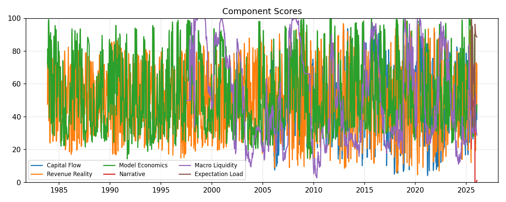

AI Market Fragility Monitor
40.2
Elevated
As of 2026-01-16
Fragility is building; crowding or narrative decay may be increasing sensitivity.
One component is maxed, but it has not yet propagated into volatility, crowding, narrative; the stress appears contained.
Macro conditions are relatively calm; current fragility appears sector-specific (idiosyncratic) rather than systemic.
Why This Moved
- Dispersion: -42.49 (-1.3σ)
- Capital Flow: +28.63 (+2.1σ)
- Revenue Reality: +24.48 (+1.6σ)
- Crowding: -9.85 (-1.5σ)
- Volatility: -9.02 (-0.9σ)
Component Snapshot
- Capital Flow: 66.9
- Revenue Reality: 71.7
- Model Economics: 47.3
- Narrative: 1.3
- Macro Liquidity: 28.9
- Dispersion: 42.6
- Crowding: 27.9
- Volatility: 29.8
- Pricing Pressure: 99.9
- Expectation Load: 88.6
Index History

Component History
What would push this into Stressed?
- Crowding above 50 for three consecutive weeks.
- Volatility score above 55.
- Narrative score above 30.
- Capital Flow above 75 with a rising 3-week trend.
- Composite index up 15+ points over three weeks.